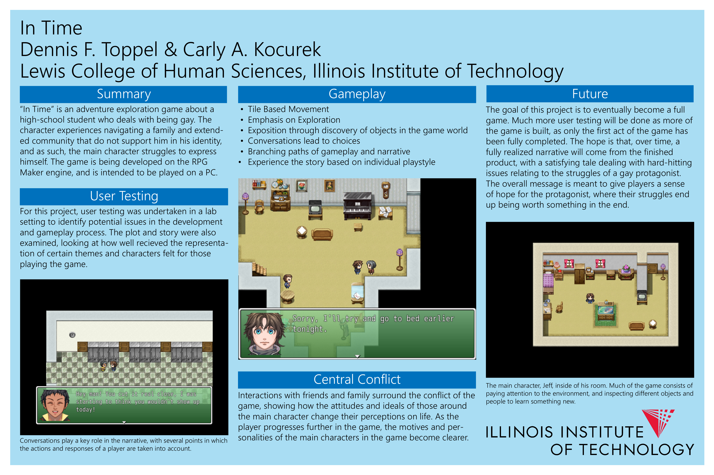

In Time: Prototype Video Game Project
My game project, In Time, is a project that was made in the RPG Maker Engine for a Senior project for my major, alongside my academic advisor, Dr. Carly A. Kocurek. I used the skills that I learned through previous coursework to create a game that I felt reflected who I am as a person, as well, as showcasing some of the game design skills I've gained.
Below is a poster created for the project, highlighting the design process in creating the game, as well as providing information on the subject matter and gameplay of the game itself. Also below is a download link of the current finished prototype, though development is still continuing independently of the initial project scope.
Click here to download the current prototype demo! (Note: You may need to add an anti-virus exception to the .exe file to run)